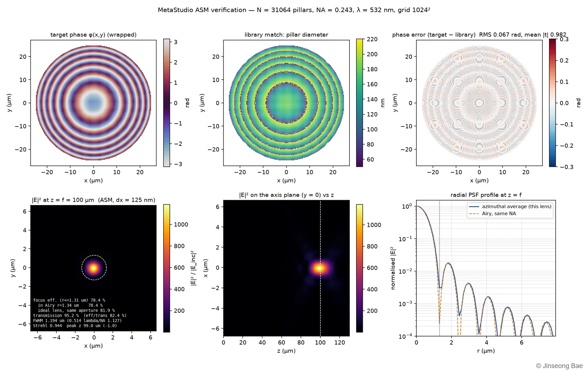
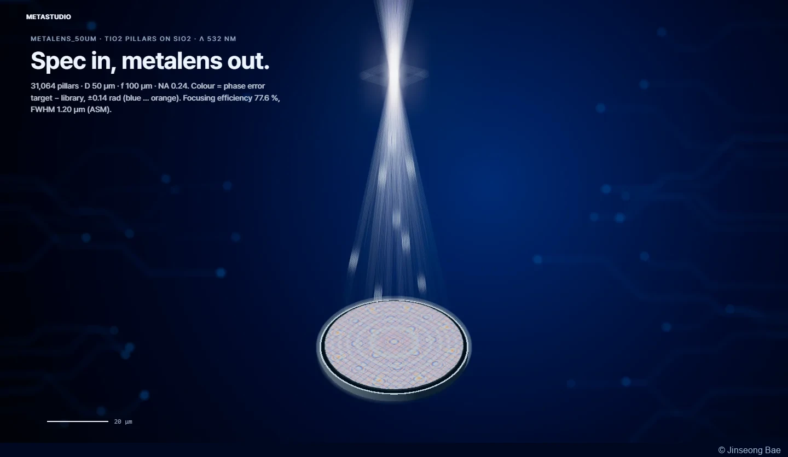
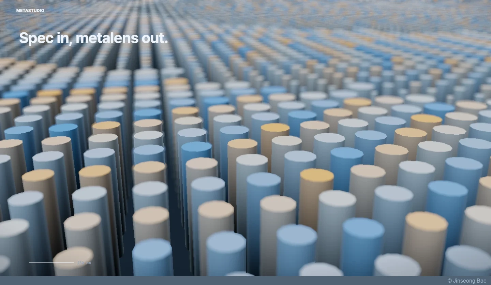
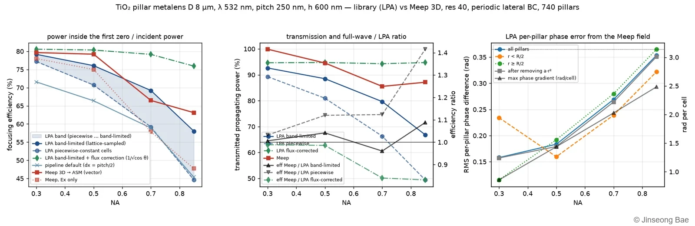

Problem and motivation
In metalens design, unit-cell simulation, phase mapping, propagation checks and layout usually live in separate scripts. I could not find an open tool that connects everything in one pass, from the spec to fabrication files, validation results and a 3D view, so I put one together myself.
The second question is the tool's own assumption. LPA treats each pillar as if it sat in an infinite periodic array and borrows that phase. It tends to break down at the edge of a high-NA lens, where the phase changes quickly. Without measuring with full-wave simulation how far it can be trusted, I cannot claim an efficiency number.
Simulation setup
Unit-cell library (RCWA)
| Solver | meent (RCWA), Fourier order fto 7, raster 256² |
|---|---|
| Structure | Circular TiO₂ pillars on a SiO₂ substrate, height 600 nm, square lattice pitch 250 nm |
| Sweep | Diameter 50–220 nm, 35 values at 5 nm steps |
| Materials | TiO₂ n 2.40 (no dispersion), SiO₂ n 1.4607 |
| Incidence | λ 532 nm, TE, normal incidence |
Lens validation (ASM)
| Propagation | Angular spectrum method (ASM), non-paraxial propagator, evanescent waves excluded, scalar |
|---|---|
| Grid | dx 125 nm (1/2 of the pillar pitch), 1024², 2× padding |
| Near-field model | Band-limited LPA by default, piecewise LPA selectable |
| Efficiency definition | Power inside the first zero of the azimuthally averaged |E|² in the z = f plane ÷ power incident on the lens aperture |
Full-wave comparison (Meep 3D)
| Targets | D 8 µm lenses with 740 pillars, NA 0.3 / 0.5 / 0.7 / 0.85 |
|---|---|
| Cell | 9 × 9 × 3 µm, resolution 40 px/µm, periodic lateral boundaries, PML 0.5 µm along z |
| Source · monitor | Ex Gaussian pulse inside the substrate, Ex·Ey·Ez DFT on a plane 0.5 µm above the pillars, normalized by a reference run without pillars |
| Far field | Near field propagated to z = f by component-wise ASM |
Pipeline
- LibraryThe 35 diameters are solved with RCWA and tabulated as phase and transmission (288 seconds). Phase range 2.12π, mean |t|² 0.965.
- Phase mappingWith a hyperbolic phase as the target, the diameter nearest in circular phase distance is chosen. 48 global phase constants are searched and the one with the smallest error is used. Cells with |t| < 0.5 are excluded.
- Focusing validationThe LPA near field is propagated to the focus with ASM to compute efficiency, FWHM and Strehl.
- GDSgdsfactory places one cell per diameter as instances (2.73 MB, 3 seconds).
- 3D viewerthree.js InstancedMesh draws the pillars, with phase error shown as color and the focal-plane |E|² as a texture.

Results — Ø 50 µm, f 100 µm lens
The lens has 31,064 pillars and 5.7 Fresnel zones. It was placed with an RMS error of 0.067 rad vs the target phase (max 0.143) and a mean |t| of 0.982.


| Focusing efficiency | 78.4 % (ideal lens with the same aperture 81.9 %) |
|---|---|
| Transmission | 95.2 % |
| FWHM | 1.194 µm (diffraction limit 1.127 µm) |
| Strehl | 0.944 |
| Focal position | z = 99 µm (design 100 µm) |




The viewer draws the actual lens (31,064 pillars) at 60 fps. A benchmark with 10⁶ pillars (random placement) runs at 13.6–27.5 fps on a laptop integrated GPU (Intel Arc 140V): usable, but not smooth.
Full-wave validation — how far does LPA hold?
The full 50 µm lens cannot be solved in 3D full-wave, so I built D 8 µm lenses (740 pillars) from the same library, solved them with Meep 3D at NA 0.3–0.85, and compared them with three LPA models.


| NA | 0.3 · 0.5 · 0.7 · 0.85 |
|---|---|
| Meep 3D | 79.7 · 79.2 · 66.5 · 63.1 % |
| Band-limited LPA | 79.2 · 76.1 · 69.2 · 58.0 % |
| Piecewise LPA | 77.2 · 70.7 · 59.2 · 44.6 % |
Piecewise LPA underestimates the efficiency at NA 0.85 by more than 18 pp. Band-limited LPA stays within −2.7 ~ +5.1 pp of Meep, so I switched the default validation model to band-limited LPA. As a result, the 50 µm lens efficiency was also updated from 77.6 % (piecewise) to 78.4 %.

Convergence and cross-checks
- RCWA order fto 7 → 13: phase difference 0.4°. Empty cell gives T + R = 1, matching the Fresnel values.
- Meep resolution 40 → 60 (NA 0.7): per-pillar phase RMS difference 0.031 rad, efficiency 66.5 → 66.1 %.
- Replacing the lateral boundaries with PML changes the efficiency by less than 1 pp.
- For the 50 µm lens, I ran Meep cylindrical on an axisymmetric homogenized surrogate device and got 59.0/67.0/68.9 % at resolution 20/30/45, extrapolated to about 70.5 %. This is 6–8 pp lower than LPA.
Limits and non-claims
Claims
- Spec → GDS → validation → 3D runs as one command
- For D 8 µm, NA 0.3–0.85, band-limited LPA stays within −3 ~ +5 pp of Meep 3D
Non-claims
- The 78.4 % for the 50 µm lens is a model value, not a full-wave result for this lens
- Material dispersion, oblique incidence and polarization dependence were not covered
- DRC was not run on the GDS, and the lens was not fabricated
About 6 % of the spectrum is cut off at the edge of the ASM window, and this remains a systematic error in the transmission values.
Code layout
library/build_library.py— builds the library with a meent sweepdesign/__main__.py— full run from the spec YAML to GDS, validation and viewer dataverify/asm.py— ASM propagation and efficiency/PSF metricsverify/meep_nearfield.py,verify/compare_meep.py— Meep 3D near field and LPA comparisonverify/meep_cyl.py,verify/res_convergence.py— cylindrical surrogate device and resolution convergenceviewer/— three.js viewer
All Meep runs used 4 processes in WSL on a personal PC. Work done 31 October – 2 November 2026.